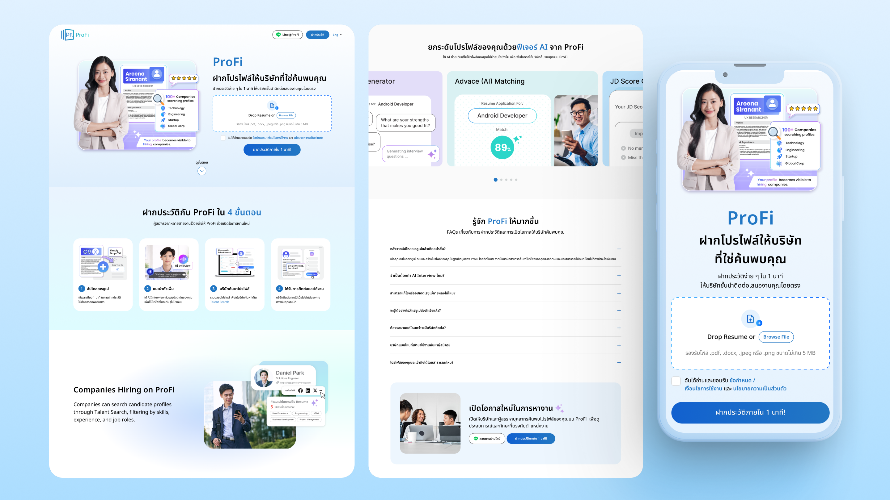

Requirement
ProFi needed a responsive landing page that could introduce a different way to discover career opportunities. Instead of asking people to search and apply for individual roles, the service lets them upload a résumé once so verified companies can find and contact suitable candidates directly.
The primary audience included experienced professionals in Thailand who may be open to a new opportunity but do not want to spend time completing long application forms or repeatedly searching job boards.
- Business goal: Increase qualified résumé uploads and build a useful talent marketplace for both professionals and participating companies.
- Core message: Upload a résumé in about one minute, create a searchable profile, and let relevant companies approach you when your experience matches their needs.
- Conversion requirement: Place the résumé upload action prominently, explain supported file formats and consent requirements, and repeat the primary action at useful decision points.
- Trust and privacy: Explain that participating companies are verified, profiles are not public, and candidate information is visible only within the employer-side ProFinder service.
- Content hierarchy: Move from the main value proposition and upload action to the four-step process, company safeguards, comparison with job boards, frequently asked questions, and a final call to action.
- Responsive experience: Keep résumé upload, process explanations, trust signals, and calls to action easy to understand and use across desktop, tablet, and mobile screens.

Design Thinking Process
I used a design thinking process to balance ProFi’s acquisition goal with the questions and concerns people may have before sharing their résumé. The page needed to make the service feel simple while clearly explaining how discovery, contact, and privacy work.
Empathize
I reviewed the existing candidate journey, stakeholder requirements, and the concerns professionals may have about time, privacy, company credibility, and what happens after a résumé is uploaded.
Define
I defined the main communication challenge: people needed to quickly understand how ProFi differs from a traditional job board, why uploading once is useful, and who can access their information.
Ideate
I explored a content flow that combines an immediate upload action with a four-step explanation, verified-company benefits, a direct comparison with job boards, privacy answers, and repeated calls to action.
Prototype
I created responsive wireframes and high-fidelity designs in Figma, focusing on the résumé upload area, consent states, scannable process cards, comparison content, FAQ behavior, and clear mobile reading order.
Test and refine
I reviewed the page with business teams, project managers, stakeholders, and engineers. Feedback was used to clarify Thai-language messaging, file requirements, privacy details, trust signals, and the placement of résumé upload actions.
The final direction gives ProFi a clear path from initial interest to résumé upload while answering the questions that can prevent people from taking action. The reusable section structure also supports future content, campaign, and product updates.